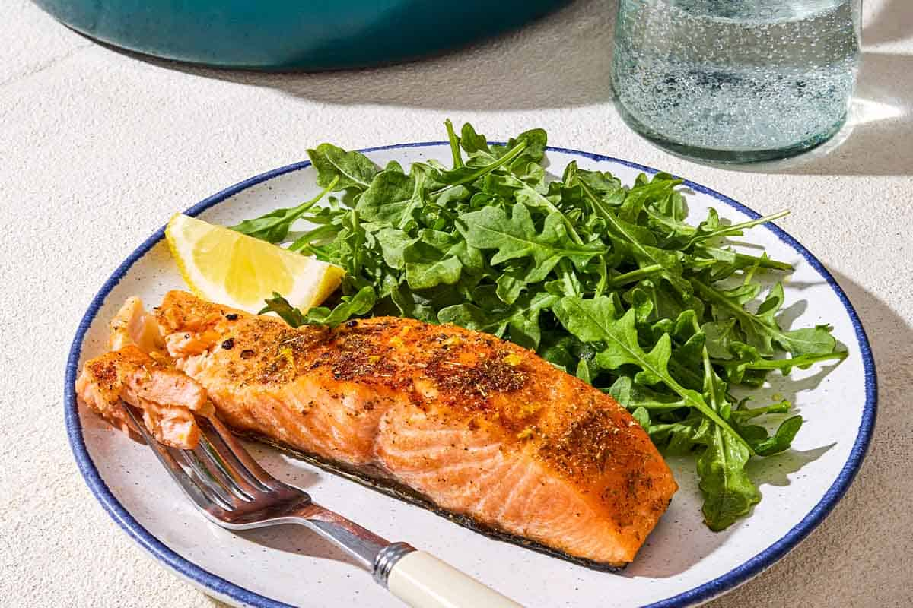

Seared Salmon

Description
This is a deliciously easy recipe for pan seared salmon! Easily make this in under 20 minutes.
Ingredients
- 4 (6 ounce) fillets Salmon
- 2 tablespoons olive oil
- 2 tablespoons capers
- 1/8 teaspoon salt
- 1/8 teaspoon ground black pepper
- 4 slices lemon
Steps
- Preheat large skillet over medium high for 3 minutes.
- Coat salmon with olive oil; place skin-side down in the preheated skillet and increase heat to high
- Sprinkle with capers,salt,pepper;cook for 3 minutes on one side. Turn salmon fillets over;continue to cook until salmon easily flakes with fork, about 5 minutes
- Transfer salmon to plates and garnish with lemon slices (optional)